01 · RECOGNIZE
Recognize Early
Helping women, families and communities recognize pregnancy danger signs early and understand when symptoms require medical attention.
MamaWatch Association is a survivor-driven, community-based maternal and neonatal health organization working to reduce preventable maternal and newborn deaths through early recognition, timely referral, community action and stronger connections to care.
Watchers learn to recognize danger signs, support preparedness and encourage timely referral—without making clinical diagnoses.
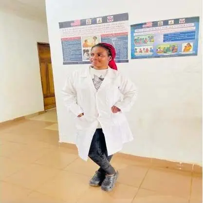
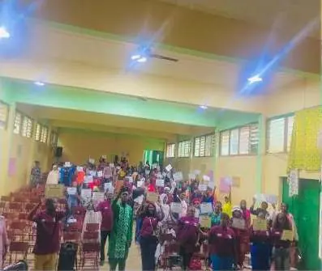
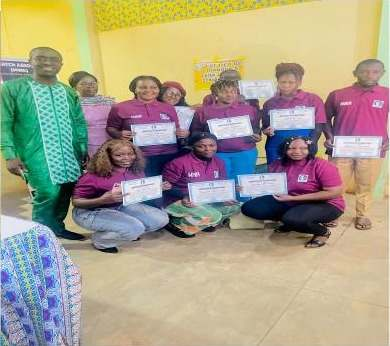
Baseline surveys across target communities found a 93%–96% awareness gap around preeclampsia, its symptoms and its risks. MamaWatch brings practical maternal-health knowledge closer to communities, helping women, families and trusted community members recognize pregnancy danger signs, speak up and encourage timely access to care.
A world where no woman dies from preventable pregnancy-related complications — achieved through empowered communities, stronger health systems and the early detection, timely referral and effective management of preeclampsia and eclampsia.
To reduce preventable maternal and newborn deaths through awareness, education, advocacy, community engagement, health-system strengthening and strategic partnerships.
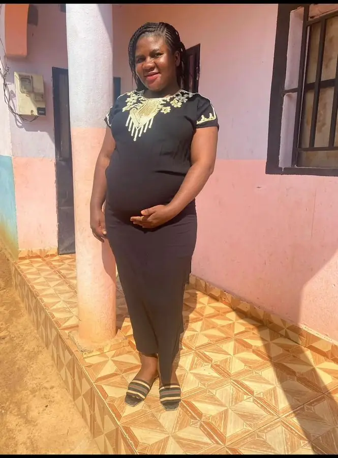
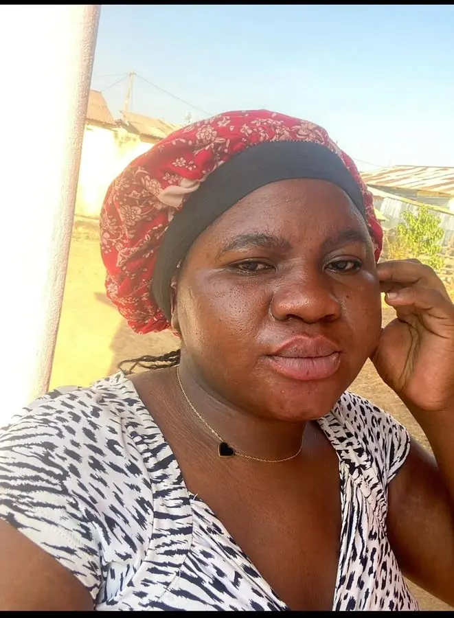
Stella's pregnancy seemed normal until persistent headaches, swelling and fatigue were repeatedly dismissed as malaria or stress. By 28 weeks her condition had become critical — and it was a neighbor, not a clinician, who recognized the danger signs and insisted she return to hospital. At 34 weeks she underwent an emergency Caesarean section, fighting severe preeclampsia for nearly ten hours. Her daughter was born prematurely at 1.3kg and spent weeks in Kangaroo Mother Care before reaching a healthy weight.
Recovering, Stella asked herself one question: "What if that woman had not recognized the warning signs?" She found that most women around her had never heard the word preeclampsia, despite knowing the symptoms all too well. That realization — that one informed neighbor had saved her life — became the foundation of MamaWatch.
MamaWatch works where community awareness, family support and clinical care meet — anchored by a network of trained Community Watchers who help families recognize danger signs and act early. The goal is simple: help people recognize danger, ask questions and support timely access to care.
Helping women, families and communities recognize pregnancy danger signs early and understand when symptoms require medical attention.
Encouraging women and those around them to take concerning symptoms seriously and seek appropriate medical care without unnecessary delay.
Training trusted community members to recognize warning signs, speak up, encourage timely referral and watch over mothers without replacing healthcare professionals.
Using community education, survivor experiences, digital engagement and peer support to keep maternal-health knowledge moving beyond individual outreach sessions.
Training trusted community members to recognize pregnancy danger signs, speak up and encourage timely referral.
Awareness sessions, campaigns and events that reach women, families and communities directly, in churches, markets and homes.
Supporting antenatal care visits and strengthening the connection between communities and health facilities.
Centering survivor testimony and peer support to build trust and open conversation around preeclampsia and eclampsia.
Working with health authorities, institutions and partners so awareness and screening become part of the existing health system.
Exploring digital tools to complement, not replace, the human connection provided through Community Watchers and health services.
Each session creates space for questions, lived experiences and practical knowledge—and can reveal how much remains to be understood.
Women reached: 40 · Engaged community elders and fathers to move maternal health beyond a “women-only” issue and toward a community priority.
Women reached: 25 · Focused on distinguishing normal pregnancy changes from critical red flags. Only one woman in the full room had previously heard the word “preeclampsia.”
Reached 35 women; none had heard of preeclampsia despite many reporting severe symptoms. A participant described a friend on dialysis after unmanaged pregnancy-induced kidney failure.
Reached 85+ men and women. Male participants followed up afterward to ask how to safeguard their wives, and the Women’s President requested a dedicated Watchers training.
Reached 15 women with survivor testimony. Mid-session, MamaWatch identified a community member hospitalized with the exact symptoms discussed — she had suffered a stillbirth from severe preeclampsia.
Reached 37 mothers. One participant realized her own dismissed “stress” had been postpartum preeclampsia; another linked a young girl’s death, long blamed on witchcraft, to undiagnosed eclampsia.
Reached 35 women from the Bakossi community after Bantai. The session focused on danger signs, risk factors, pregnancy preparation and community response, with three women pledging to become MamaWatch Watchers.
At Mazenod Hall in Ngaoundéré, 110 pregnant women, mothers, community elders, youth and religious leaders participated in practical training on pregnancy danger signs, preparedness and timely referral.
At the Salama Muslim Women’s Community, participants reported earlier and more consistent antenatal care, shared warning signs with other women, and referred four women to MamaWatch. At Bongkisheri, two men connected their wives for counselling and hospital referral; both women were preeclampsia survivors and were followed up through care. Following the Presbyterian CWF session, a woman who recognized symptoms of postpartum preeclampsia was referred to Ngaoundéré Regional Hospital and followed until her blood pressure returned to normal.
MamaWatch delivered a two-week volunteer initiative in the ANC unit, reaching 105 women with education on preeclampsia and eclampsia, danger signs, risk factors and when to seek urgent care. Watcher educational cards were distributed for use at home. The midwife reported improved regularity in ANC attendance, earlier reporting of concerning symptoms and stronger communication between women and health workers.
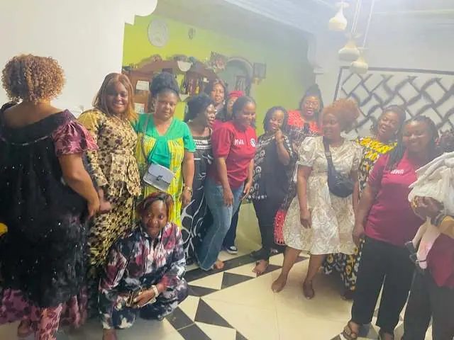
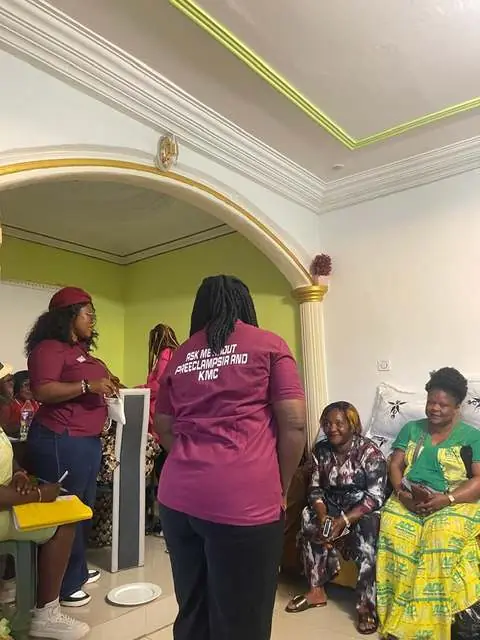
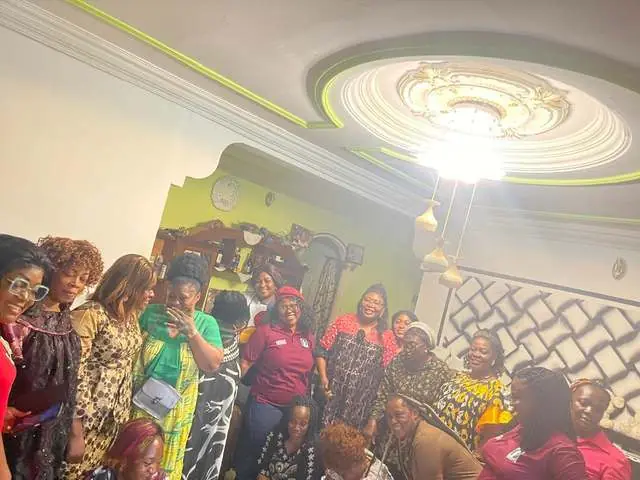
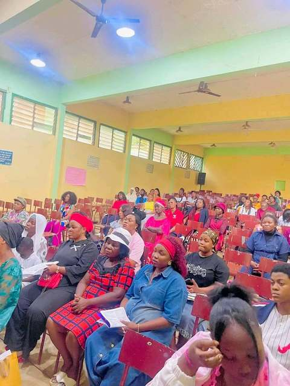
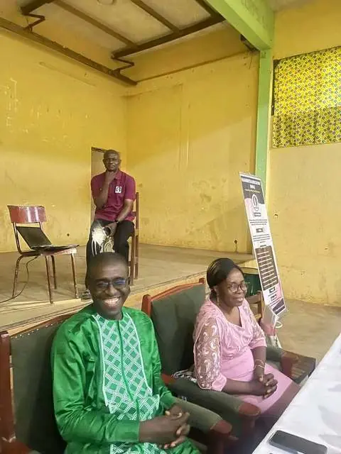
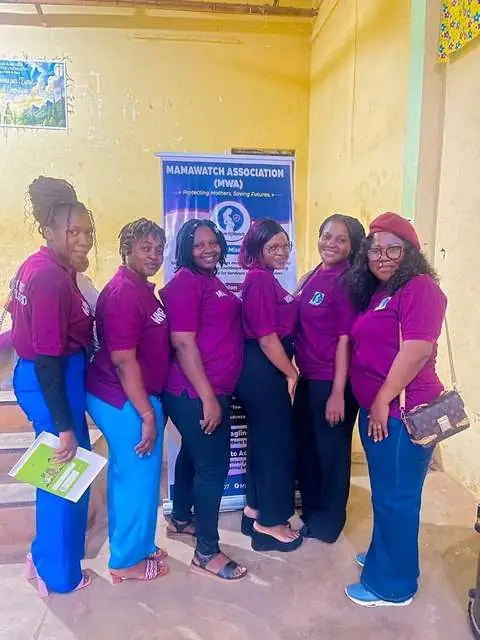
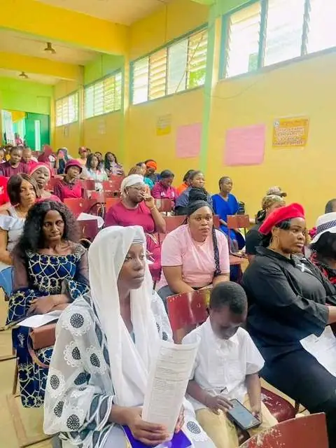
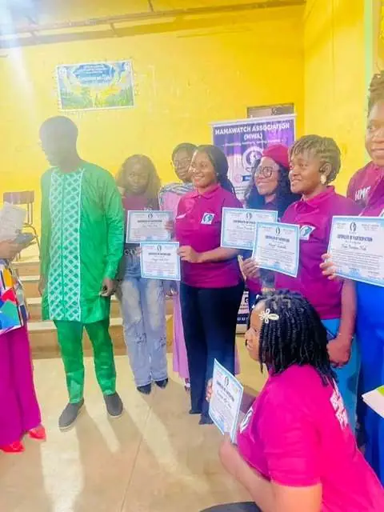
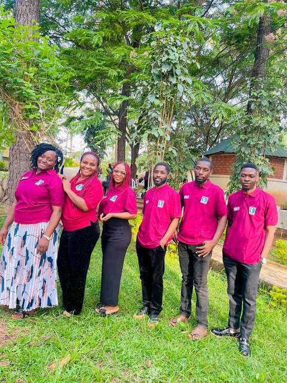
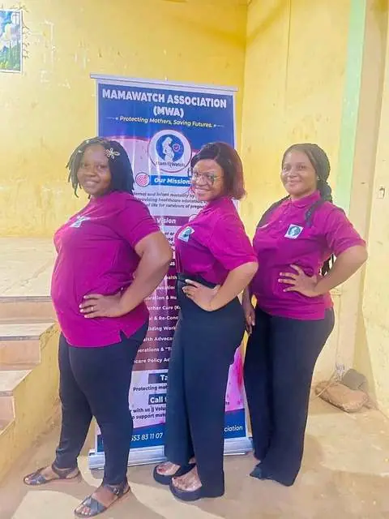
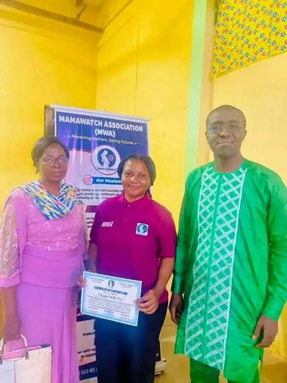
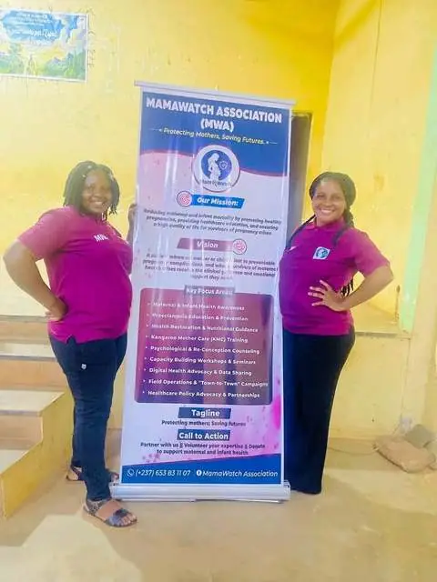
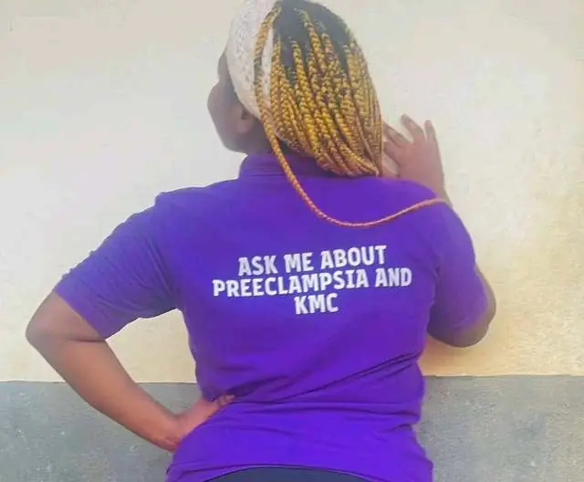
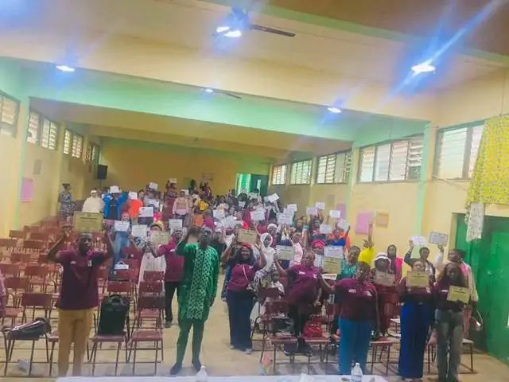
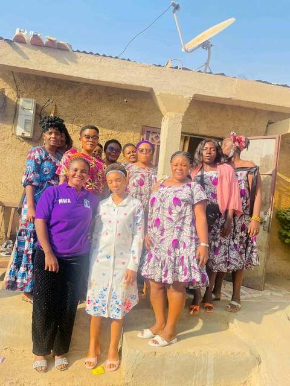
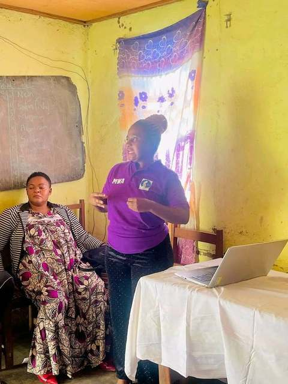
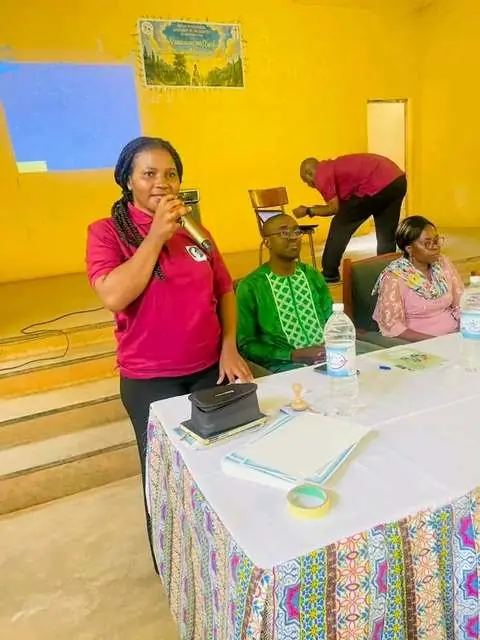
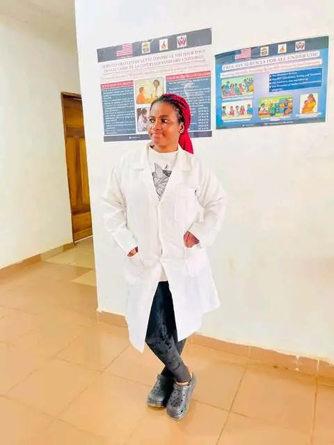
Community Training Workshop · Mazenod Hall, Ngaoundéré
The workshop brought together pregnant women, mothers, community elders, youth and religious leaders for practical maternal-health education.
MamaWatch Association (MWA) is officially registered under Receipt of Declaration N° 030/H.52/AB/SAKJP/RM, issued 23 April 2026 by the Prefect of Vina Division, Adamawa Region. Strategic governance is kept separate from day-to-day implementation, with a clear feedback loop from community outreach back to leadership and partners.
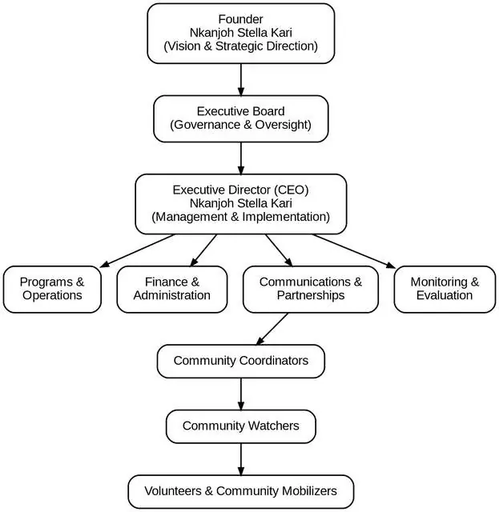
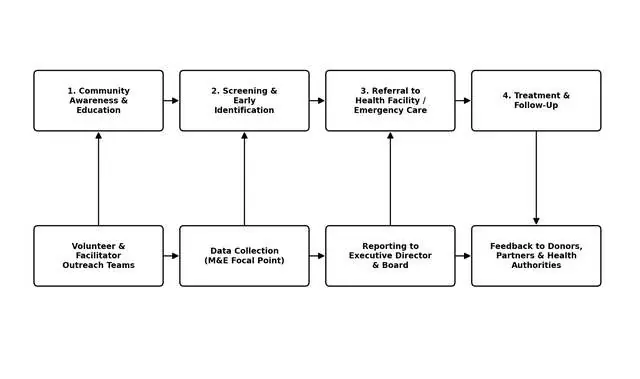
Current achievements are the foundation for a clear, phased path to scale.
MamaWatch's work is led by a small team combining survivor testimony with partner clinicians and trained community facilitators.
Survivor of severe preeclampsia; Biology/Geology teacher; provides overall leadership, testimony and strategic direction. Based in Ngaoundéré.
Regional Pedagogic Inspector of Physics (Teacher). Based in Ngaoundéré.
Medical Doctor. Based in Buea.
Geology teacher; co-facilitates community outreach sessions. Based in Ngaoundéré.
Gynecologist-Obstetrician, Ngaoundéré Regional Hospital.
Senior Midwife with 20+ years' experience.
Outreach facilitator for church and community sessions.
Outreach facilitator for church and community sessions.
MamaWatch welcomes partnerships with organizations committed to improving maternal and newborn health, strengthening communities and connecting women and families with appropriate care.
✅ Registered association · Receipt N° 030/H.52/AB/SAKJP/RM (23 Apr 2026)
Hospitals, health districts and clinics can partner on referral pathways, ANC screening protocols, and joint training for frontline health workers.
Fund outreach events, educational materials, digital platform development, or sponsor a district as part of your CSR or grant-making strategy.
Collaborate on maternal-health research, co-design curricula, or bring complementary programs (nutrition, WASH, family planning) into shared communities.
Introduce your organization and tell us what you would like to achieve.
Tell us about the health priority, community, program, research, or initiative you would like to address.
Share what you can contribute—funding, expertise, research, technology, services, networks, or community reach.
Connect with the MamaWatch team to identify shared priorities and practical opportunities for collaboration.
Develop and implement a clear partnership through programs, research, training, community engagement, advocacy, or resource mobilization.
Partnership enquiries: mamawatch471@gmail.com
We will review your request and contact you to explore the next steps.
Your support helps MamaWatch reach communities with reliable maternal-health information, strengthen Community Watchers and expand community-based action to protect mothers and newborns.
✅ Registered association · Receipt N° 030/H.52/AB/SAKJP/RM (23 Apr 2026)
Donations support MamaWatch Association's maternal and neonatal health activities, including community education, Community Watcher training, outreach and referral support.
Country: Cameroon
Account Name: Stella Nkanjoh Kari
For questions, donation confirmation, or further information:
Donate Now →Thank you for standing with MamaWatch. Together, we can turn support into meaningful action and lasting impact.
Explore MamaWatch resources and reliable maternal-health information designed to support informed women, families and communities.
Plain-language guide to recognizing preeclampsia and eclampsia warning signs — severe headaches, swelling, blurred vision and reduced fetal movement — and when to seek urgent care.
Request a copy →A quick-reference companion for pregnant women attending ANC visits, developed and distributed during our Bamenda Regional Hospital outreach.
Request a copy →Practical guidance for families caring for premature or low-birth-weight babies, as taught at the Mazenod Hall Watchers Workshop.
Request a copy →The founder's personal account of surviving severe preeclampsia — used in community sessions to open honest conversation about danger signs.
Read Stella's story →Scripts used for local radio broadcasts on preeclampsia awareness, designed for reuse by community radio stations and partner organizations.
Request a copy →The World Health Organization's authoritative overview of pre-eclampsia: diagnosis, risk factors and global impact.
Visit WHO.int →Educational materials are available in French, English and local languages. For partner organizations and health facilities interested in bulk copies, contact mamawatch471@gmail.com.
At MamaWatch, we believe meaningful change happens when communities, health professionals and partners work together.
Whether you are an individual, health professional, community leader, NGO, government institution, research organization, donor, or community group, there is a place for you to contribute.
Work with MamaWatch to develop programs, conduct research, strengthen communities, share expertise, mobilize resources and create lasting impact.
Partner With Us →Give your time, skills, experience, or professional expertise to support MamaWatch initiatives and community activities.
Get Involved with MamaWatch →Your experience matters. Share your story, ideas, or community perspective to help us understand needs, raise awareness, and shape meaningful action.
Share Your Story →Help promote reliable health information and encourage positive health practices among families and communities.
Become a Health Champion →Stay connected with MamaWatch, receive updates, discover opportunities, and be part of a growing community committed to better health.
Join Our Community →Your contribution can help MamaWatch reach more communities and strengthen initiatives focused on maternal, newborn, child, and community health.
Support MamaWatch →Whatever you can contribute, you can help MamaWatch turn ideas into action and create meaningful impact in communities.
A mother's life should never depend on where she lives. We're expanding proven community education into three districts — Ngaoundéré, Tiko and Yaoundé (Abongmang) — paired with a digital health platform for continuous care.
Board-approved budget for the 12-month campaign roadmap.
As Preeclampsia Awareness Month comes to an end, we have one final request: support MamaWatch. There are three powerful ways you can help us save lives.
Make sure no woman around you dies from preeclampsia because warning signs were ignored. Learn the symptoms, share the information, and speak up when something is not right.
Learn the symptoms →Invite MamaWatch to churches, women's groups, schools, associations, community meetings, hospitals and gatherings. Awareness saves lives.
Invite MamaWatch →Help us print educational materials, organize outreaches, train Community Watchers, and reach more women and families.
Donate now →Every contribution helps us get one step closer to a future where no mother is lost to preventable preeclampsia. Together, we can protect mothers and save futures.
Know the Symptoms. Take Action. Know Early. Act Fast. Save Lives.
#MamaWatch #SupportMamaWatch #Preeclampsia #MaternalHealth #WomenHealth #SafeMotherhood #CommunityHealth #PregnancyCare #SDG3
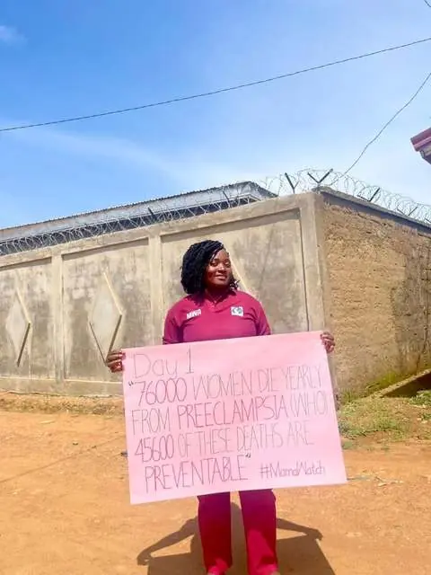
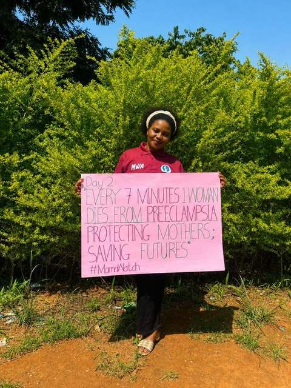
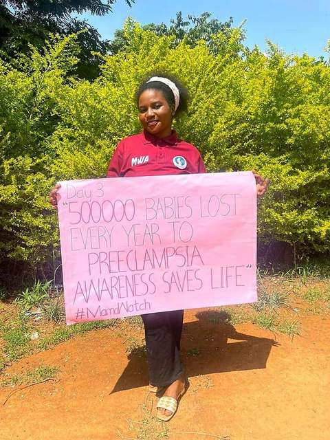
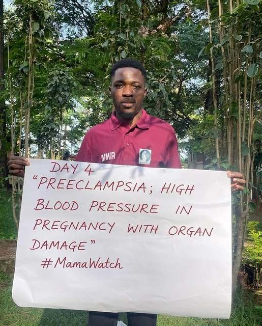
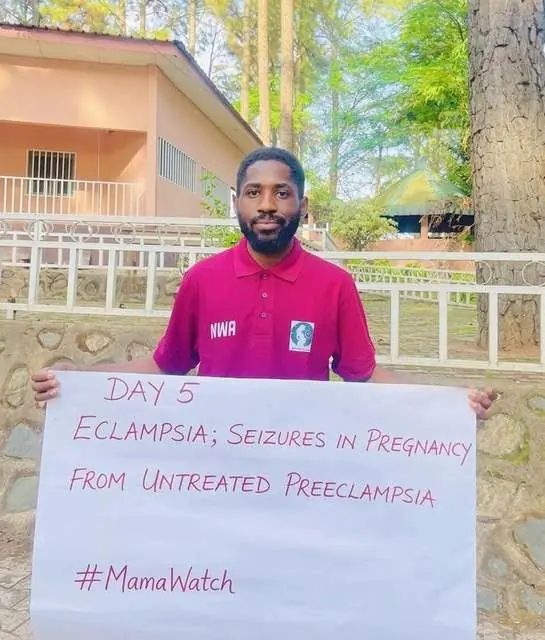
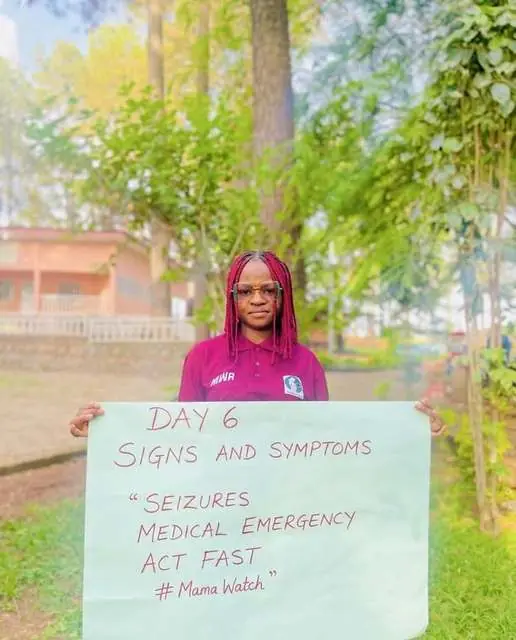
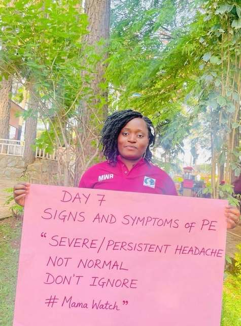
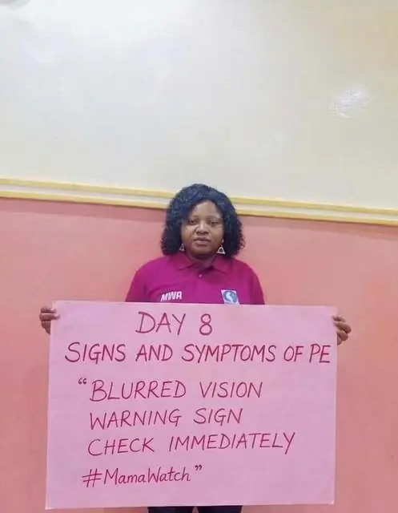
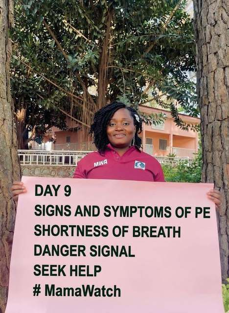
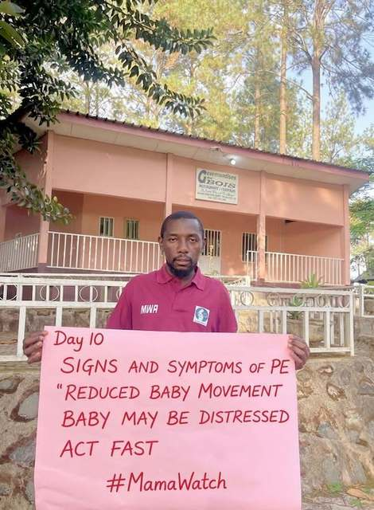
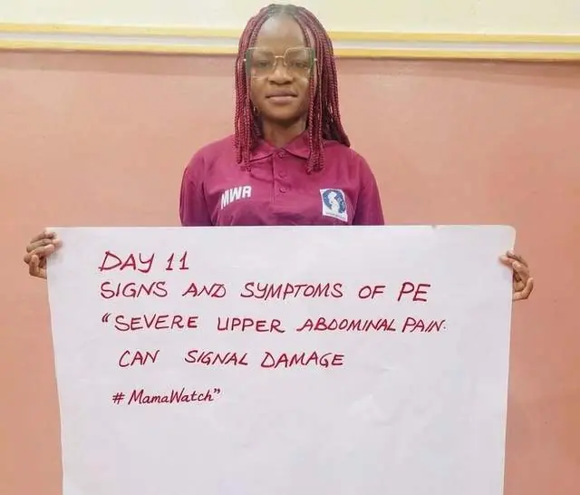
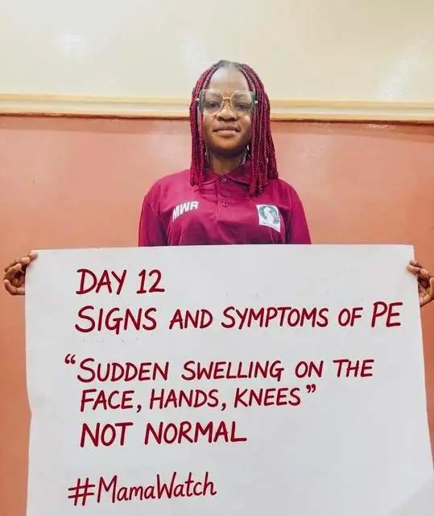
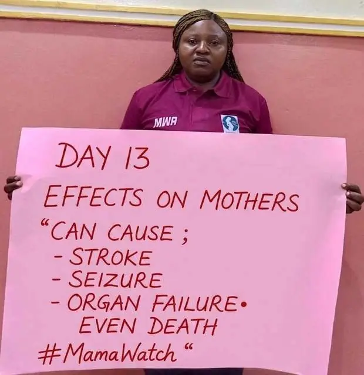
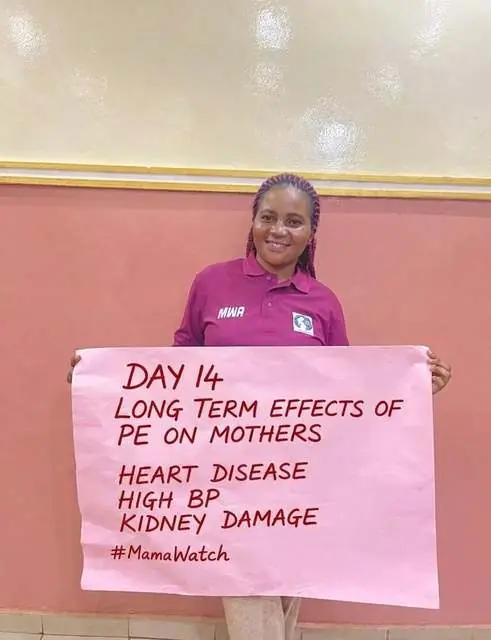
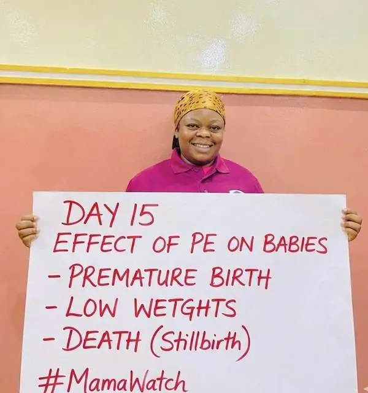
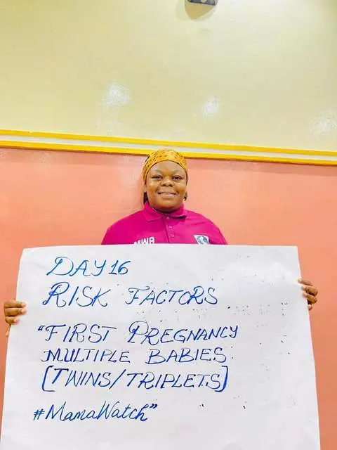
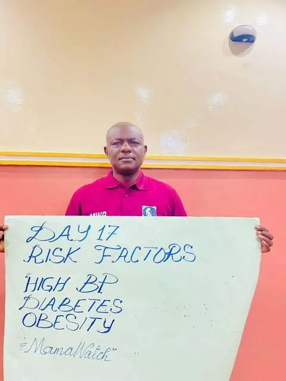
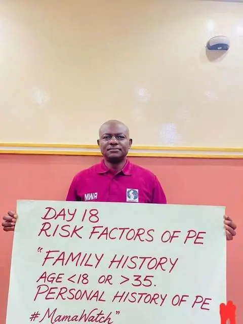
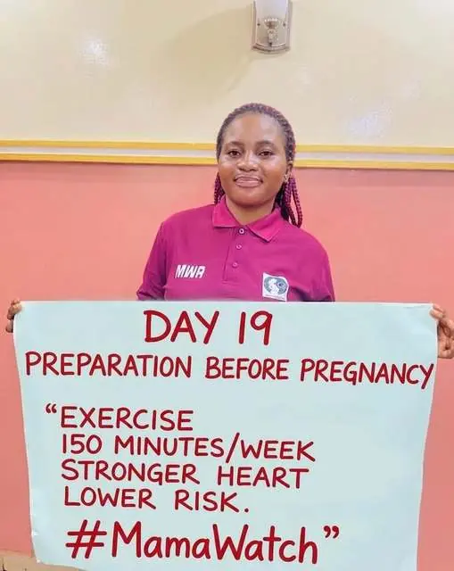
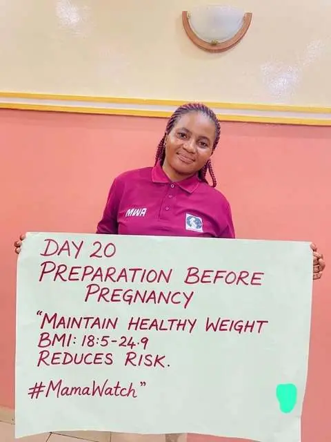
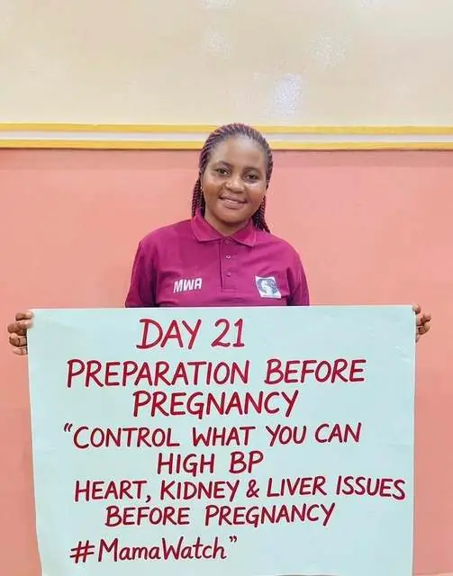
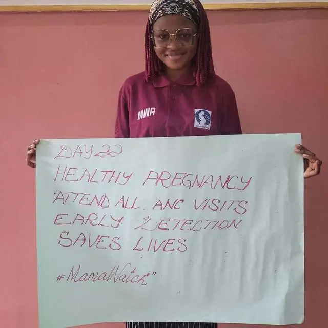
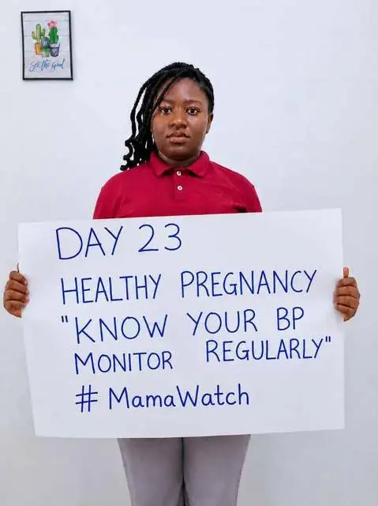
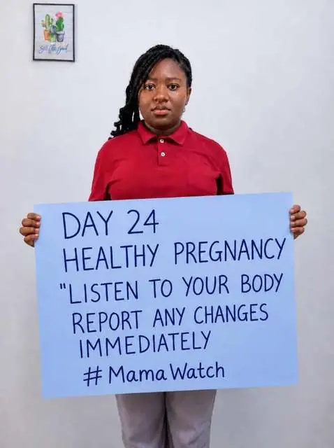
MamaWatch is building a network of informed community Watchers, health advocates and partners committed to protecting mothers and saving futures across rural Cameroon.